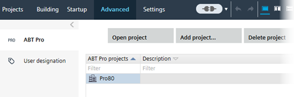

先进的使用Advanced 用于创建和删除 ABT Pro 项目、创建项目特定用户名称以及获取诊断项目信息的组件。高级组件包含以下任务。任务描述ABT ProABT ProCreating ABT Pro projects用户指定User designationCreating project-specific user designationsFurther informationCreating ABT Pro projectsABT ProUser designation